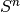
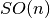
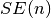
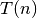
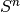
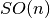
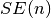
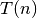

PyGeometry¶
PyGeometry is a Python package that implements common operations on the differentiable manifolds usually encountered in computer vision and robotics.
Implemented manifolds:  , , , ,
.
Implemented operations: conversion between representations, geodesic distances, interpolation, random sampling.
, , , ,
.
Implemented operations: conversion between representations, geodesic distances, interpolation, random sampling.
The design goal is to have a set of well-tested primitives: I’ve been burned too many times from having used buggy functions. PyGeometry is paranoid on program correctness. It uses PyContracts to validate input and return values. stochastic_testing (another experimental library) is used to check the correctness of the random sampling operations.
Download¶
Use:
pip install PyGeometry


You can download this project in either zip or tar formats. You can also clone the project with Git by running:
$ git clone git://github.com/AndreaCensi/geometry

News¶
2011-01-27: Started documentation.
2011 to 2018: Used in production in many projects.
2018-03-27: Refreshed documentation.